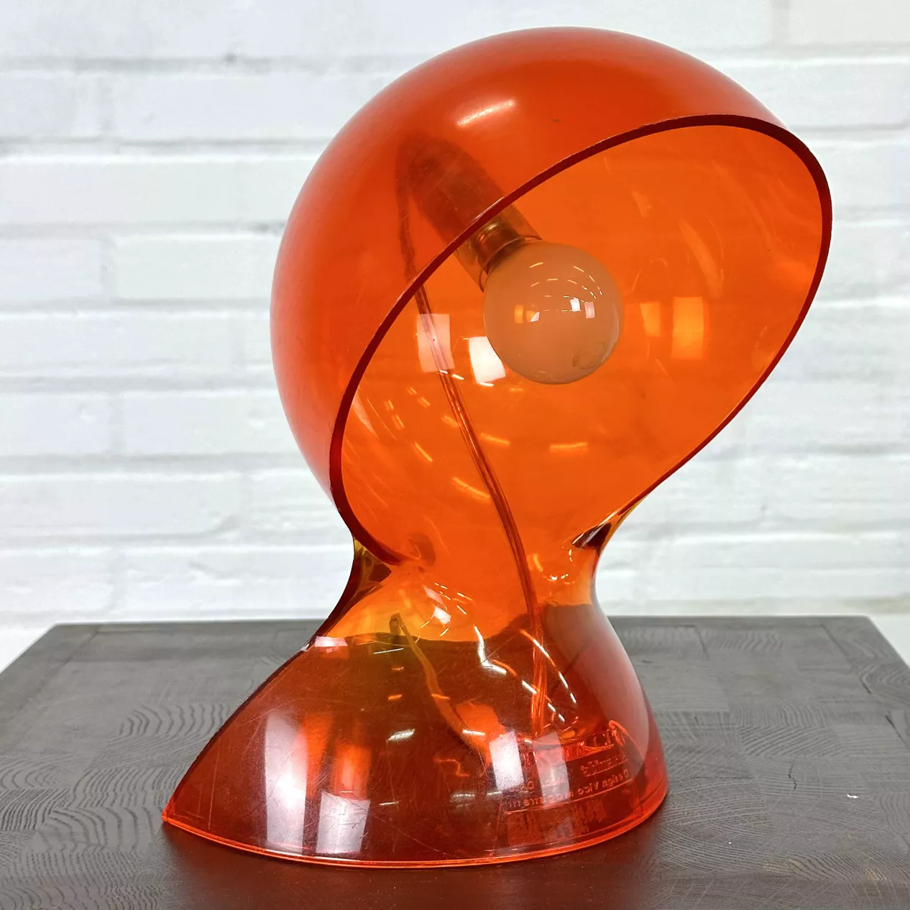
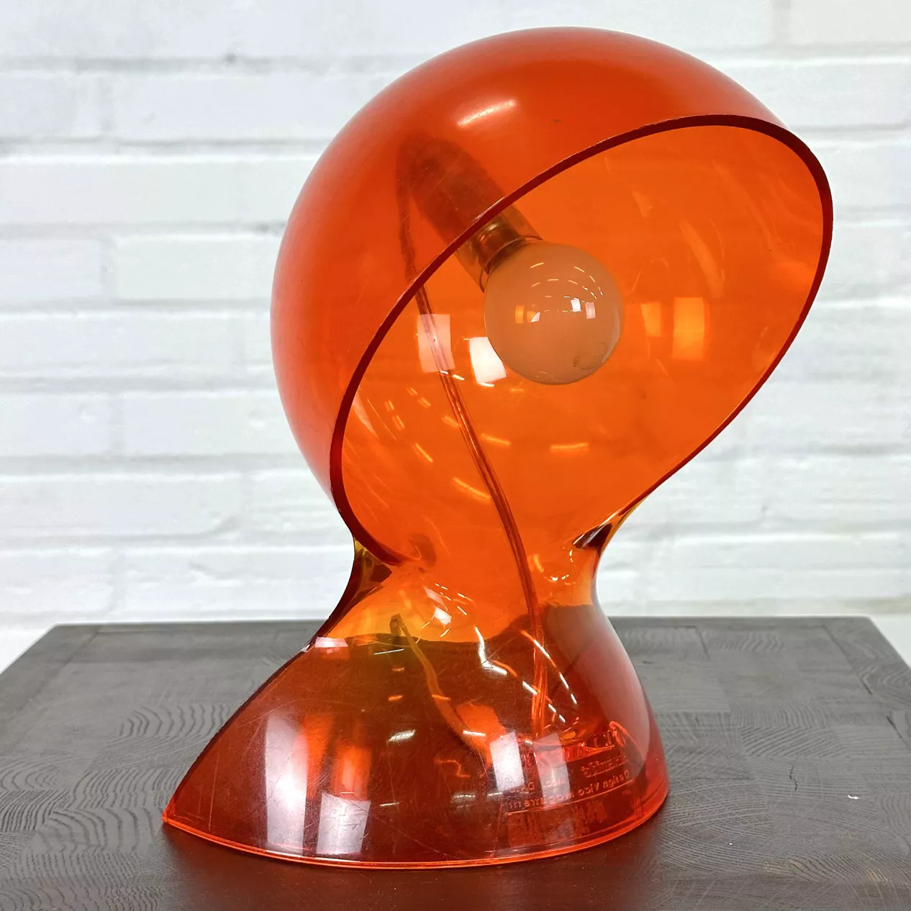

Vico Magistretti
Lampe de table
Description :Cette lampe à poser est une icône vibrante du design Pop et de l'âge d'or du plastique des années 1960-70. Elle est conçue comme un manifeste de la modernité synthétique, rompant avec l'assemblage traditionnel (pied et abat-jour distincts) pour proposer une forme unifiée, fluide et sculpturale. Son design repose sur une courbe sinueuse et continue, évoquant une forme en fusion ou une géométrie organique futuriste, typique de la recherche d'unité formelle des designers italiens de cette époque (comme Vico Magistretti).
Structure : Elle est réalisée en thermoplastique moulé par injection (probablement du polycarbonate ou du métacrylate) teinté dans la masse d'un orange vitaminé emblématique de la période Space Age. La coque est constituée d'un seul volume monobloc qui agit simultanément comme base et comme réflecteur demi-sphérique. La translucidité du matériau permet une diffusion chaleureuse et enveloppante de la lumière, transformant l'objet lui-même en une source lumineuse incandescente.
Dimensions : H. (Hauteur totale) : 26 cm, L. (Largeur) : 18 cm, P. (Profondeur) : 18 cm.